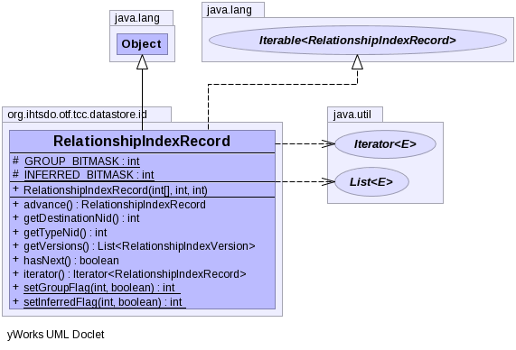

- All Implemented Interfaces:
- Iterable<RelationshipIndexRecord>
public class RelationshipIndexRecord
extends Object
implements Iterable<RelationshipIndexRecord>
Origin relationship data stores the following data for each entry:
[record length]
[typeNid]
[destinationNid]
[inferredBit + groupGtZeroBit + STAMP]
[groupId] Only if indicated by groupGtZeroBit
[inferredBit + groupGtZeroBit + STAMP] addition record only if > 1 STAMP
[groupId] Only if indicated by groupGtZeroBit
[inferredBit + groupGtZeroBit + STAMP] addition record only if > 2 STAMP
[groupId] Only if indicated by groupGtZeroBit
...
Note this record has no member id. If inferred and stated relationships have the
same type, the STAMPs and groups are merged into a single record. This combination of stated and inferred
saves 96 bits/inferred relationship, and makes search more efficient, since there is less data to
search over. In addition, the compression of STAMP, Group, and Inferred values for relationships in group 0
saves an additional 64 bits, for ~196 bit savings per relationship. Further savings are also realized by
not requiring each revision to represent the type and refinability, and eliminating an object pointer
for each revision (96 bits + 64 bits per revision).
- Author:
- kec
-
-
